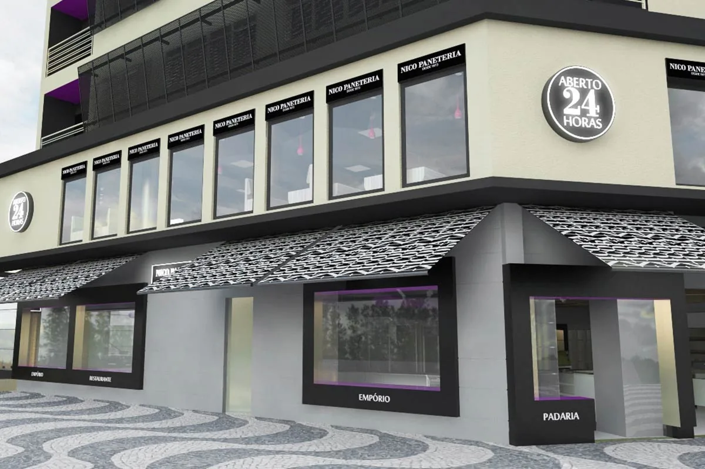
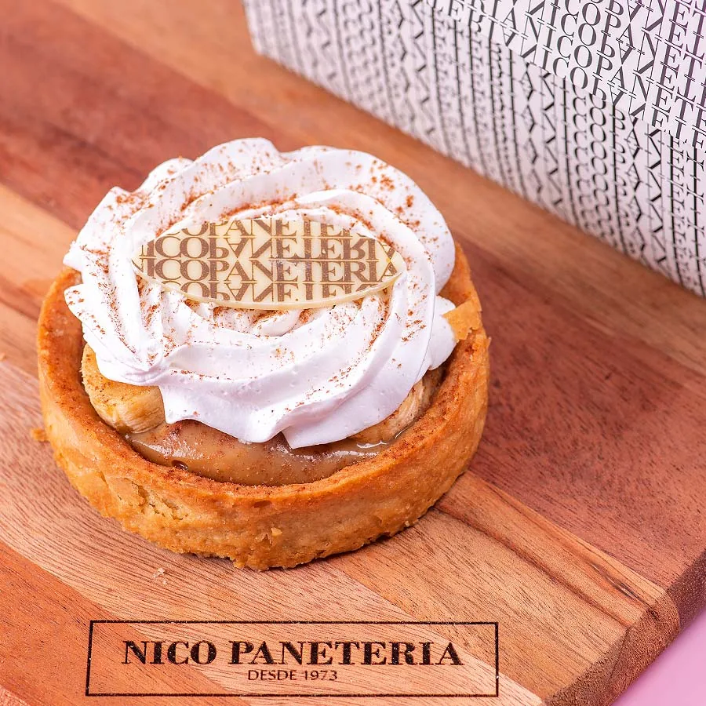
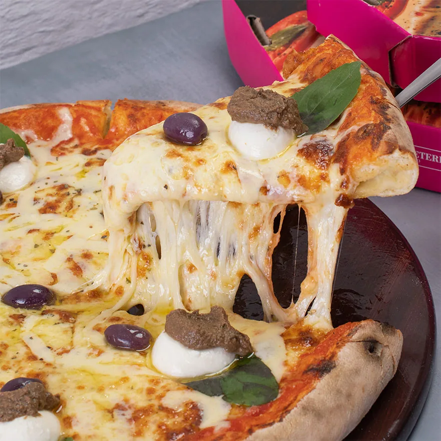
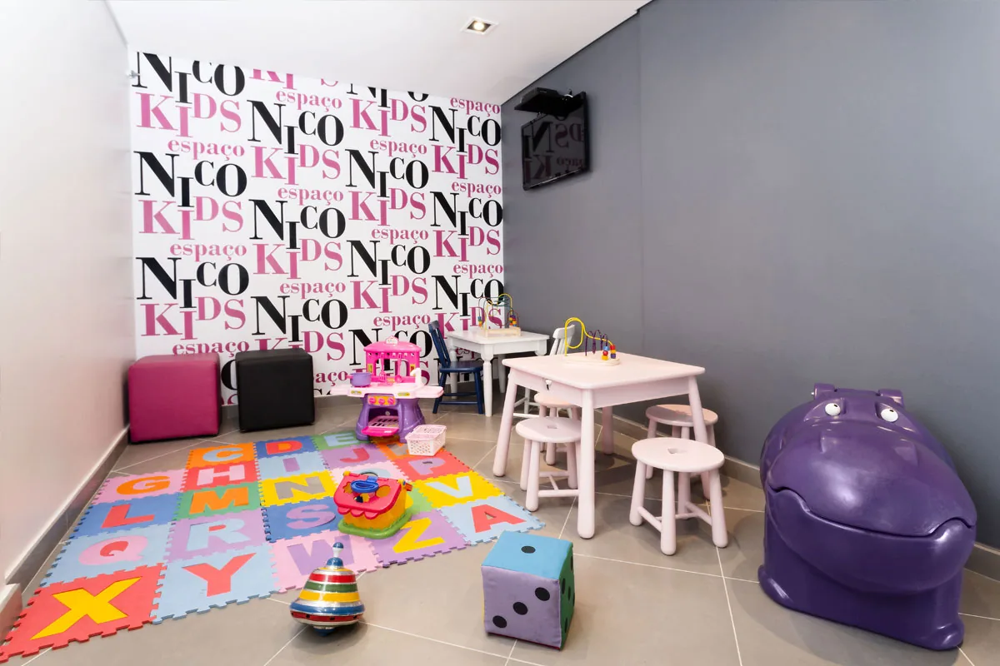

A Nico
Em Campinas desde 1973, a qualquer hora.
Mais de cinquenta anos de porta aberta na Av. Andrade Neves.

A história
Começou com pão. Virou ponto de encontro.
A Nico abriu em 1973 e foi crescendo com o bairro: a padaria ganhou confeitaria, almoço, pizzaria e buffet de sopas. Hoje funciona 24 horas, sete dias por semana.
Pães, salgados e doces são feitos na própria Nico. É ali que muita gente de Campinas toma o café da manhã, almoça no meio do expediente ou encontra os amigos à noite.


O andar de cima
Mesas, pizza e caldo.
No piso superior ficam as mesas e, à noite, o buffet de pizzas e sopas. De domingo a quinta, das 18h às 23h; sexta e sábado, até meia-noite.
Prévia: falta foto do andar superior.Espaço Kids
As crianças brincam, você termina o café.
- Sexta19h–23h
- Sábado e domingo8h–13h e 19h–23h
